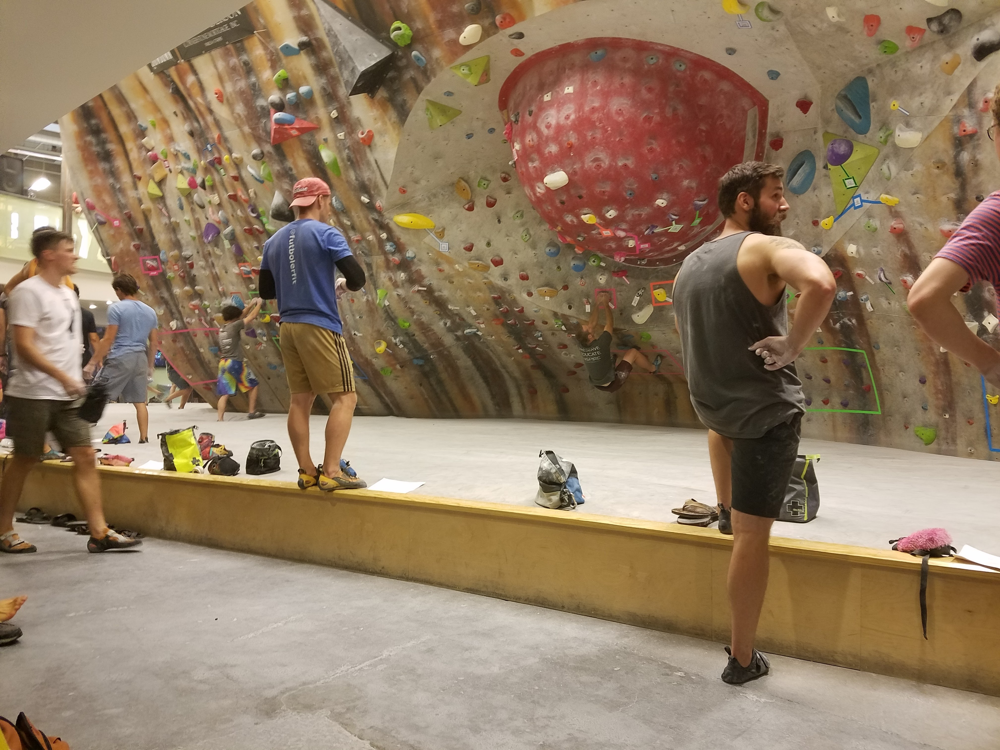

Rock climbing? What's that? | A Brief Introduction to the Sport
It's just like it sounds -- you climb on rocks. More specifically, there are a number of sub-disciplines that you can explore, and the major differences are the means in which you protect yourself in the event of a fall.
Since falling can be scary, the differences in how you stop or lessen the impact of a fall have a substantial effect on the difficulty of these disciplines.
I began climbing in early 2014, joining a gym with a bunch of friends. Since then it's become such a regular part of my life that I forget I've been doing it since then and can't give someone an answer if they ask how long I've climbed, which is weird in it's own way. I mainly do two disciplines, bouldering and sport climbing. An almost-total view of climbing disciplines, including one that's not strictly using rocks, called aid climbing, looks like this:
-
Aid climbing (which uses hooks and fixed ropes to ascend a rock face)
-
Free climbing (which you only ascend by using the actual rock):
There's enough distinction between these pursuits that I won't get into the details. That's also why I linked to Wikipedia pages
for all of these individual items. But, generally, most people go outside
and climb on rocks using ropes or what are called "crash pads", which are giant soft mats that protect you from impacting
the ground. Outside I almost always have gone sport climbing, which where you have a harness on, tie into a rope, and will be (hopefully)
clipping said rope into a quickdraw thats clipped on to a bolt as you get higher up the rock face.
OK -- I suppose that's enough of the introduction. People seem to ask a lot about the basics of climbing, so I thought it useful to clarify that I'm not climbing
without any sort of protection upfront. Now let's dive into the list of places I've been lucky enough to visit in my time climbing, even though I'm not that good at it in the grand scheme of things.

Climb So iLL | St. Louis, Missouri
While I had gone climbing twice before at my college gym, and also at the two Upper Limits gyms in St. Louis, in a real sense this is where I started rock climbing. I still go here every week and do a mixture of climbing on their bouldering wall and sport climbing, which I usually do twice a week. My climbing partner is actually how I found out about LaunchCode; he had just graduated when we started climbing together and heavily suggested that I start the program once the next class opened up. I'm glad I listened!
The gym is one of the best in the Midwest, but beyond the gym's amenities one of the real attractions to anyone starting climbing has to be the community that surrounds the sport. Everyone is, basically, climbing against themselves, trying to improve their performance from the last time they were on the wall. Some people can get competitive, but you're really always trying to do your own best, and that's it. As a result the climbing community is generally very welcoming, positive, open and supportive. That's a lot of positive adjectives, but everyone started sometime and we all have days when climbing feels impossible, so humility is part and parcel of the experience.
TOP↑
Jackson Falls | Shawnee National Forest, Illinois
This area is the mainstay for locals wanting to sport climb without driving more than a couple hours away. It's a beautiful valley in the Shawnee National Forest near Marion, IL. It's close enough that you can go there and back in a day and still have enough time to stop and eat a nice dinner at a Mexican restaurant. Which seems to be what everyone does, for some reason.
Jackson falls is known for it's idiosyncratic style of climbing. Many of the routes are "cryptic", which means that the solutions to getting up the climb are not always obvious if you're unfamiliar with the area. That's actually a good thing, even if it doesn't sound (or feel) like it initially. The area feels like some lost part of the world, and the rock formations are often strange and seem otherworldly, which make this area feel alive in a unique way.
TOP↑
Horseshoe Canyon Ranch | Jasper, Arkansas
Horseshoe Canyon Ranch is actually a ranch -- there are horses and goats that are kept on this privately-owned land. The area is also known nationwide for their "Horseshoe Hell" event, which is an event where thousands of people show up to climb for either 12 or 24 hours straight, sleep, and then party together.
The ranch is beautiful, and the climbing is very inviting for someone who's mostly familiar with gym climbing. There are a lot of what are known as "chicken heads", which are large protrusions that are easily grabbed, along with a good mix of easy to moderate, and some harder, climbing routes. While it's largely a sport climbing destination, they also have a lot of bouldering.
TOP↑
Red River Gorge | Kentucky
Red River Gorge is a mecca for climbing in the US. It's famous for it's steep, overhung walls, high-quality rock, ease of access, and Miguel's, a hugely popular pizza restaurant turned climbing store and camp ground. On any given night during climbing season there will be at least 100 people here eating, hanging out, playing basketball and talking about what they'll do tomorrow.
When I went here I wasn't really prepared for the experience. RRG has thousands of routes over a huge area, and the tallest, most imposing walls I've see in this country. Having only gone to a few other climbing locations, for some reason this trip was when outdoor climbing really clicked for me, which made indoor climbing seem like only like a preparation for going outside. This trip planted a seed for wanting to get more time outside on real rock, and for traveling to more areas across the US and the world.
TOP↑
Siurana | Cornudella, Spain
Honesty, I was incredibly lucky to have this experience. This area is considered one of the best sport climbing areas in the world,and people certainly know what they're talking about. The area is centered around a historic rock outcropping that has a beautiful old city, which was a historic stronghold of one of the Moors when the Christians were reconquering Spain. There's a spot near the old castle where the Moorish queen supposedly jumped off the cliff on her horse, which left a horseshoe print in the rock. That spot is called "La Salt de la Reina Mora", and there are climbing routes named after the story.
We met people from all over the world here, the location is incredibly beautiful, and it's hard to find anything equivalent exactly equivalent. RRG is the nearest in similarity, as everyone in Siurana congregates around a cafe and restaurant on the top of the plataeu, which is similar to Miguel's. But, go figure, it's a very different experience climbing in a place that's known worldwide when you're not from that country and you get to eat new food and drink the local wine each night after hiking back in.
TOP↑
You've found the secret lair of...